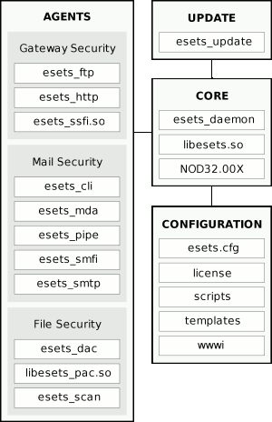
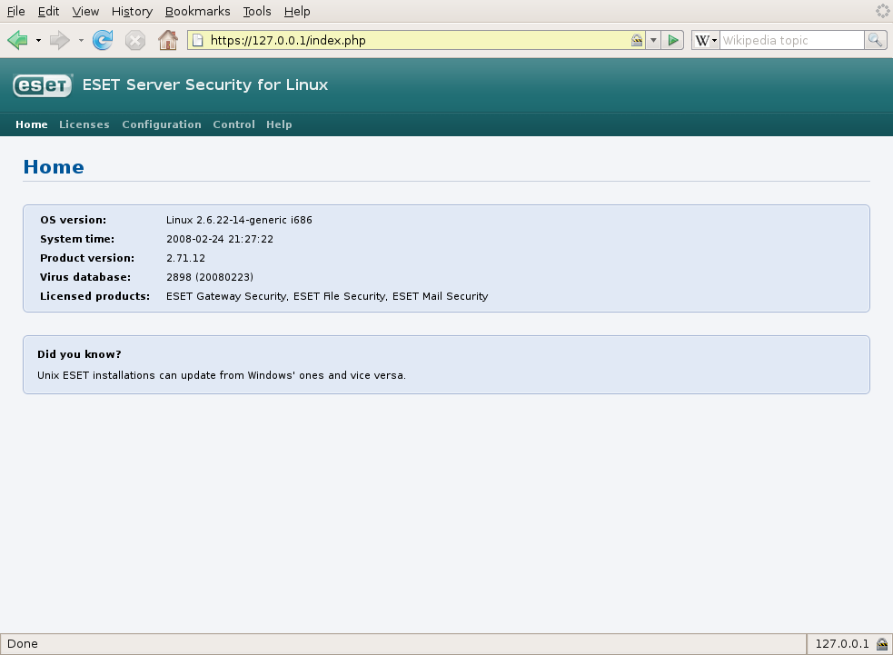
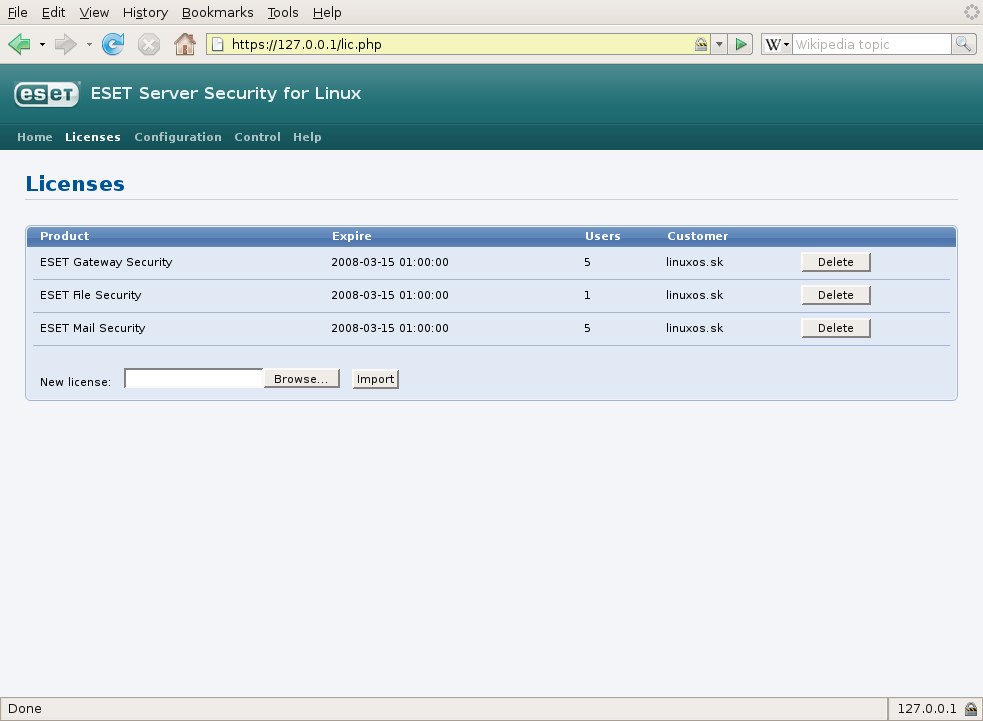
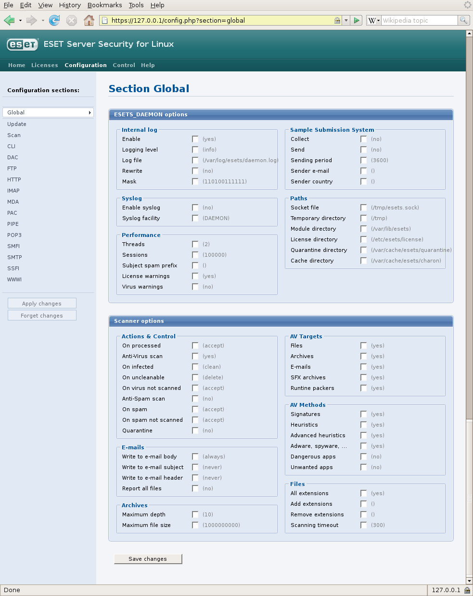
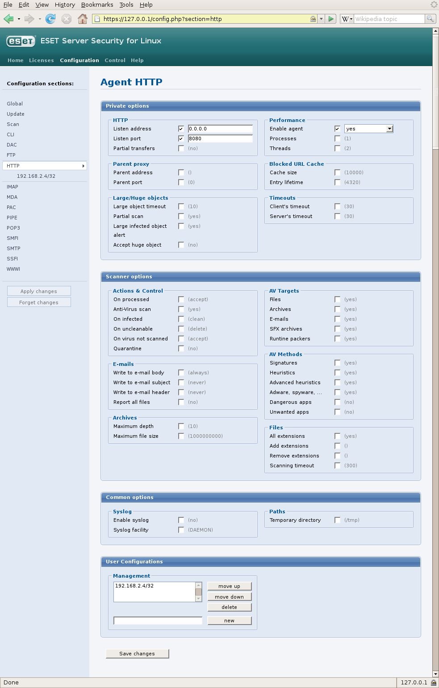
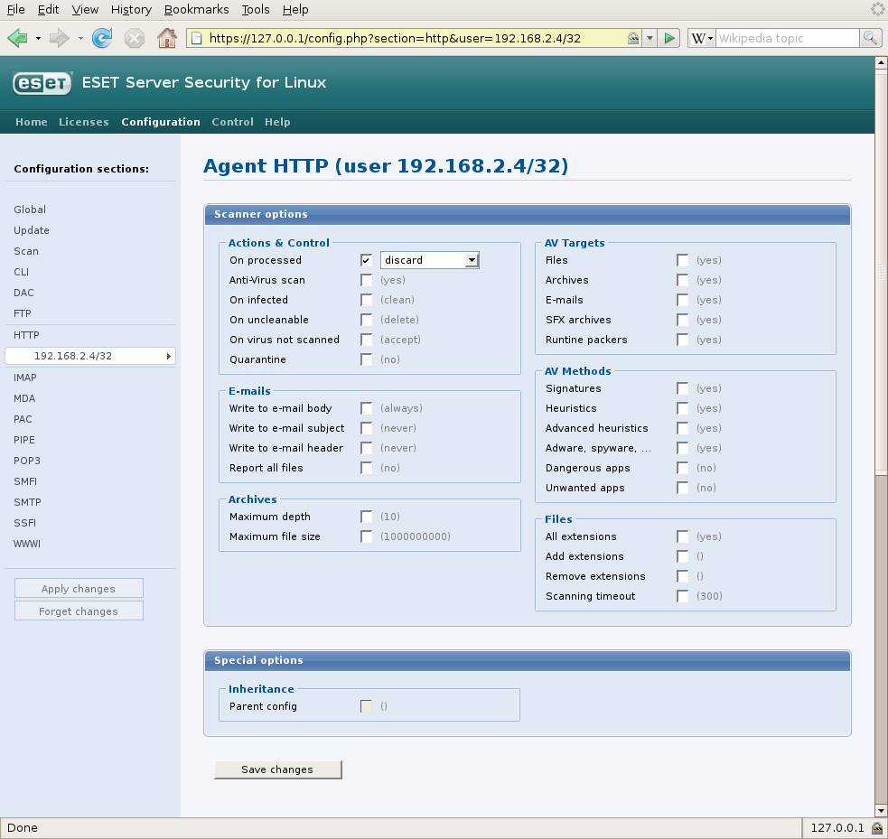
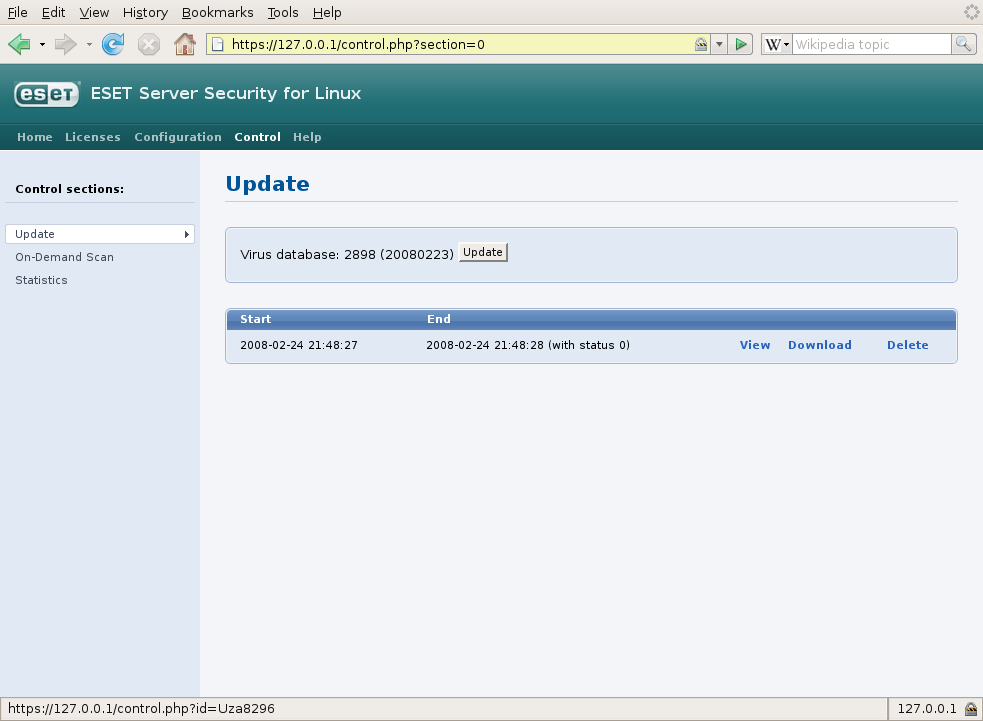
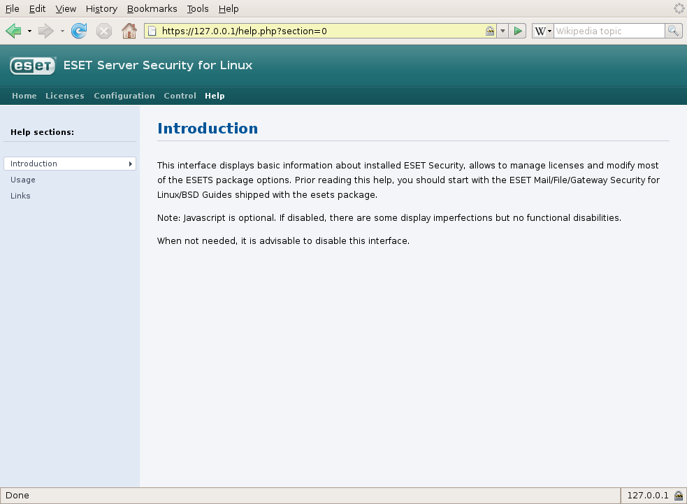
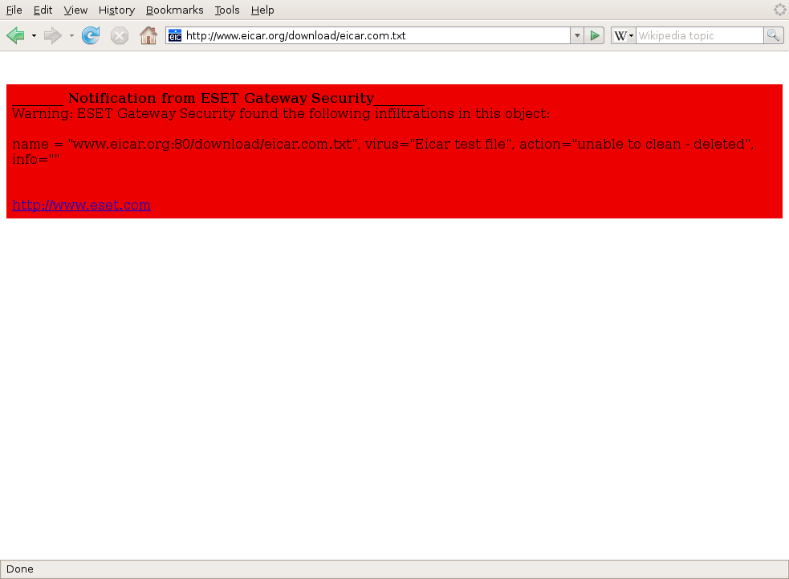

Slovak
SlovakV prvej časti tejto dvojdielnej recenzie si predstavíme spoločnú architektúru produktov ESET Server Security a podrobnejšie sa pozrieme na produkt Gateway Security. V druhom diele sa s vami podelím o svoje skúsenosti s produktmi Mail Security a File Security.
Skúsili ste ako začiatočník zadať do nejakého fóra zameraného na OS Linux otázku, či je potrebné mať na tomto operačnom systéme nainštalovaný antivírusový program? Ak áno, tak ste sa takmer určite stali svedkom búrlivej diskusie na tému Linux verzus Windows. Skutočnosť, že väčšina ľudí pracuje v OS Windows s právami administrátora a tým uľahčujú prácu tvorcom škodlivého kódu však nemusí hneď znamenať, že tento systém má zlú bezpečnostnú architektúru. Takmer určite mi dáte za pravdu, že ak by ste na Linuxe spustili vírus, alebo akýkoľvek škodlivý kód s právami roota, spôsobilo by to s vysokou pravdepodobnosťou kolaps celého systému. Dovolím si tiež tvrdiť, že písanie vírusov pre OS Linux je nepopulárna činnosť, najmä kvôli slabej rozšírenosti tohto systému a veľkej rôznorodosti používaných distribúcií. Navyše vírus schopný prežiť len na pár systémoch sa iba ťažko dostane do večerných správ.
Tento článok však nemá byť o porovnávaní operačných systémov a polemizovaní nad tým či sú, alebo raz budú vírusy pre OS Linux. Jeho úlohou je poskytnúť môj názor na produkty spoločnosti ESET, ktoré som mal vďaka portálu linuxos.sk možnosť otestovať. Hneď v úvode musím priznať, že nie som expert na vírusy, a preto nedokážem posúdiť kvalitu detekcie infiltrácií. Pri testovaní som väčšinou používal testovací súbor eicar a v recenzii som sa zameral najmä na popis vlastností testovaných programov.
ESET je slovenská softvérová spoločnosť, ktorá má zastúpenie vo viac ako 100 krajinách po celom svete. Špecializuje sa na vývoj antivírusového a bezpečnostného softvéru. V portfóliu jej produktov nájdete antivírusové programy nielen pre OS Windows ale aj pre systémy Linux a FreeBSD, ktoré sú populárnou serverovou platformou. Poštové a proxy servery sú styčným bodom lokálnych sietí s okolitým svetom a práve preto sú ideálnym miestom, kde by mal začať boj s vírusmi a iným škodlivým kódom. Vírus poslaný e-mailom síce nenapadne váš poštový server, ale na klientskej stanici môže napáchať veľké škody. Preto je rozumné poštu a súbory sťahované z internetu kontrolovať skôr, než k ním umožníte prístup klientovi.
1. ESET Server Security
ESET Server Security pre Linux/BSD je názov produktového radu spoločnosti ESET určeného pre operačný systém Linux, ktorý v súčasnosti obsahuje tri produkty:
ESET Gateway Security
Určený na kontrolu súborov prenášaných cez brány siete (routery) alebo proxy servery.
ESET Mail Security
Určený na kontrolu e-mailov a ich príloh spracovávaných poštovými servermi.
ESET File Security
Určený na kontrolu súborov uložených na súborových serveroch.
Všetky tri produkty sú k dispozícii ako binárne balíčky vo formáte DEB (Debian, Ubuntu …), RPM (RedHat, Fedora, Suse …) a tiež ako TGZ archív (ostatné distribúcie a FreeBSD). Inštalácia je detailne popísaná v používateľskej príručke a vďaka svojej jednoduchosti by nemala robiť problémy ani menej skúseným správcom. Produkty som testoval na operačných systémoch Ubuntu 6.06 Server a OpenSuse 10. Vyskúšal som inštaláciu zo všetkých troch druhov balíčkov a vo všetkých prípadoch prebehla bez problémov.
Z oficiálnej dokumentácie sa môžete dozvedieť, že ústredným prvkom systému ESET Server Security je daemon esets, ktorý koordinuje činnosť ostatných modulov a komunikuje s tzv. agentmi.
Úlohou agentov je integrovať ESET Server Security do prostredia Mail, File alebo Gateway serverov.
Každý agent pritom vykonáva jednu konkrétnu činnosť.
Ako príklad môže poslúžiť agent esets_http, ktorý má na starosti kontrolu dát prenášaných prostredníctvom protokolu HTTP alebo agent esets_smtp kontrolujúci dáta prenášané protokolom SMTP.

Obr.1: Architektúra ESET Server Security
I keď inštalačný balík obsahuje všetkých agentov, použiť ich môžete iba so správnym licenčným súborom, ktorý dostanete pri kúpe produktu. Ak si teda zakúpite ESET Gateway Security nemôžete používať agentov ESET Mail Security i keď ich v skutočnosti máte v systéme nainštalovaných.
O aktualizáciu databáz vzoriek sa stará modul esets_update, ktorý je okrem aktualizácie ESET Server Security schopný udržiavať aj aktualizačný mirror pre antivírusový systém NOD32 verzie 2.7.
Pri zistení infiltrácie spúšťa esets_daemon používateľom definovaný shell skript, ktorý o tejto udalosti informuje správcu napríklad prostredníctvom e-mailu.
Eset Server Security podporuje tiež presun infikovaných objektov do karantény (vyhradeného adresára) a necháva tak na správcovi systému rozhodnutie ako naložiť s infikovaným súborom.
Konfigurácia celého systému sa vykonáva manuálnou editáciou konfiguračného súboru /etc/esets/esets.conf alebo prostredníctvom webového rozhrania poskytovaného modulom wwwi, ktoré po inštalácii nie je zapnuté.
Ak ho chcete používať, musíte ho zapnúť editovaním príslušnej sekcie v spomínanom konfiguračnom súbore.
Toto rozhranie používa webový server shttpd, ktorý je súčasťou produktu ESET Server Security, a teda ho nemusíte doinštalovávať ani konfigurovať.
Server komunikuje iba protokolom HTTPS a používateľa overuje pomocou mena a hesla.
V prvom momente som bol používateľsky príjemným rozhraním nadšený, no po analýze spustených procesov na mňa čakalo nemilé prekvapenie v podobe zistenia, že spomínaný webový server a všetky ostatné procesy Eset Server Security bežia pod používateľom root.
Navyše som po bližšom zoznámení s činnosťou webového rozhrania napísaného v jazyku PHP zistil, že modifikuje konfiguračný súbor umiestnený priamo v adresári /etc/esets/.
Táto skutočnosť ma motivovala, aby som sa pokúsil overiť kvalitu kódu webového rozhrania.
Ako potenciálne zneužiteľné miesto som identifikoval mazanie licenčného súboru a pokúsil som sa úpravou odosielaného formulára zmazať iný súbor uložený v adresári /etc.
Aplikácia sa zachovala správne a odmietla súbor zmazať.
Webové rozhranie som vypol a neskôr som v manuálových stránkach našiel, že samotný výrobca odporúča toto rozhranie vypínať, keď sa nepoužíva.
Lepšiu predstavu o vzhľade a možnostiach webového konfiguračného rozhrania môžete získať z nasledujúcich snímok obrazovky:

Obr.2: Hlavná obrazovka webového rozhrania

Obr.3: Správa licencií

Obr.4: Konfigurácia ESET Server Security

Obr.5: Konfigurácia HTTP agenta

Obr.6: Konfigurácia HTTP agenta - konkrétny klient

Obr.7: Konfigurácia aktualizácií

Obr.8: Nápoveda
Všetky doteraz uvedené vlastnosti sú spoločné pre celý produktový rad ESET Server Security. Poďme sa teraz pozrieť zblízka na jednotlivé produkty.
2. ESET Gateway Security
Kúpou produktu ESET Gateway Security získate možnosť používať služby troch špecializovaných agentov - esets_http, esets_ftp a esets_ssfi.so.
Agent esets_http je proxy server, ktorý je možné použiť v netransparentnom i v transparentnom móde.
Len pre úplnosť uvediem, že pri použití v úlohe netransparentného proxy musia mať všetky klientske aplikácie vo svojej konfigurácii uvedenú IP adresu a port proxy servera.
Pri použití v transparentnom móde je na bráne siete potrebné nastaviť presmerovanie HTTP komunikácie na port využívaný proxy serverom.
O skutočnosti, že sa na prenášaných dátach vykonáva kontrola na prítomnosť škodlivého kódu sa koncový používateľ dozvie až pri prístupe k infikovanému zdroju.
Agent esets_http mu namiesto požadovaného súboru zobrazí stránku s podrobnou informáciou o infiltrácii:

Obr.9: Download zablokovaný produktom Eset Gateway Security
Zavedenie antivírusovej kontroly na proxy serveri má však aj jeden vedľajší účinok. Obsah stránok sa koncovým používateľom nezobrazuje postupne, ale celá stránka “vyskakuje” naraz, pretože jej obsah musí prejsť kontrolou na prítomnosť škodlivého kódu. Takýto postup by pri prenose väčších súborov mohol spôsobiť time-out spojenia. ESET Gateway Security má však na tento problém riešenie v podobe postupného sprístupňovania menšieho objemu dát koncovému klientovi, zatiaľ čo na reálne prijatých dátach je vykonávaná kontrola. V prípade, že je sťahovaný súbor vyhodnotený ako infikovaný, zastaví proxy server odosielanie dát koncovému klientovi a ten označí prenos za neúspešný.
Vo všeobecnosti je možné za nevýhodu HTTP proxy serverov považovať fakt, že nedokážu kontrolovať HTTPS komunikáciu.
Samozrejme dá sa oponovať tým, že protokol HTTPS bol navrhnutý na ochranu dát pred odpočúvaním, no v prípade ochrany siete pred škodlivým kódom sa táto vlastnosť stáva nevýhodou.
Ak teda budete sťahovať infikovaný súbor prostredníctvom protokolu HTTP a bude zistená prítomnosť vírusu, agent esets_http vám odoprie prístup, no nezabráni vám v stiahnutí súboru pomocou protokolu HTTPS.
Kvôli tejto skutočnosti nie je možné antivírus nainštalovaný na bráne siete považovať za dostatočnú ochranu siete a je nutné mať nainštalovaný antivírusový program aj na koncových klientskych staniciach, kde sú súbory stiahnuté cez HTTPS kontrolované počas ich zápisu na pevný disk.
Agent esets_http nemusí mať priamy prístup na internet, pretože dokáže využívať služby nadriadeného (angl. parent) proxy servera.
Ľubovoľnému HTTP proxy serveru prevádzkovanému na ľubovoľnom operačnom systéme tak môže pridať schopnosť vykonávať antivírusovú kontrolu na dátach prúdiacich medzi lokálnou sieťou a internetom.
Agent esets_ftp je proxy server určený na kontrolu dát prenášaných prostredníctvom protokolu FTP a na rozdiel od agenta esets_http sa dá použiť iba ako transparentné proxy.
Táto skutočnosť zabraňuje jeho nasadeniu v komplexnejších konfiguráciách proxy serverov.
Osobne by som uvítal keby bola jeho funkcionalita začlenená do agenta esets_http, podobne ako je tomu napríklad pri proxy serveri Squid.
Agent esets_ssfi.so je plugin pre proxy server SafeSquid, ktorý je voľne dostupný na nekomerčné použitie v sieti s max. 20 klientskymi systémami.
Tento agent nepracuje ako predchádzajúci dvaja agenti (nepočúva na vlastnom TCP porte), ale spomínaný proxy server mu odovzdáva dáta, ktoré je potrebné skontrolovať.
SafeSquid na rozdiel od agenta esets_http podporuje aj FTP spojenia, a tak posúva agenta esets_ssfi.so na vrchol rebríčka použiteľnosti agentov dodávaných s Eset Gateway Security.
Daňou za väčšiu použiteľnosť sa však stáva nutnosť zakúpiť komerčný proxy server.
Pri testovaní tohto agenta som mal možnosť overiť aj úroveň podpory spoločnosti Eset, pretože agent obsiahnutý v mnou použitom balíčku Eset Server Security nebol kompatibilný s najnovšou verziou SafeSquid-u. Do 12 hodín od zadania požiadavky na podporu mi bola zaslaná nová verzia a bola tiež uvoľnená nová verzia balíčkov.
Cieľovou používateľskou skupinou produktu ESET Gateway Security pre Linux/BSD sú najmä firemní zákazníci a jeho cena je závislá od počtu klientskych staníc. Aktuálnu cenu môžete zistiť v on-line objednávkovom systéme.
Záver
Dovolím si tvrdiť, že antivírusový program je taký dobrý, aká je dobrá jeho vírusová databáza. Ak sa rozhodnete pre komerčné riešenie, môžete sa spoľahnúť na to, že každý pracovný deň sa nemalá skupina ľudí venuje rozširovaniu a skvalitňovaniu tejto databázy.
ESET Server Security je mladý produktový rad s dobrým modulárnym návrhom, ktorý si určite získa používateľov najmä vďaka jednoduchej inštalácii, skvelej dokumentácii a skutočnosti, že používa rovnaký skenovací mechanizmus ako celosvetovo uznávané produkty spoločnosti Eset určené pre platformu Windows.
Mnou testovaná verzia 2.71.12 síce ešte obsahuje pár nedostatkov ako napríklad všetky procesy spustené pod používateľom root, alebo agenta esets_http bez podpory FTP protokolu.
Podľa vyjadrenia pracovníkov spoločnosti ESET sa však čoskoro dočkáme verejnej beta verzie z radu 3.0, ktorá už tieto nedostatky obsahovať nebude.
Pevne verím, že sa im podarí udržať nasadený kurz a budú svoje produkty pre Linux/BSD naďalej rozvíjať a zlepšovať.